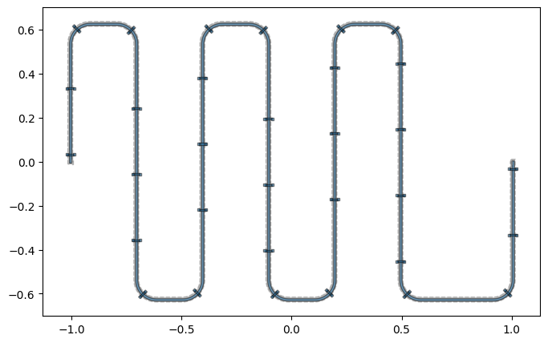
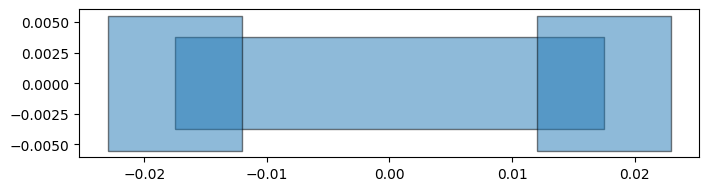
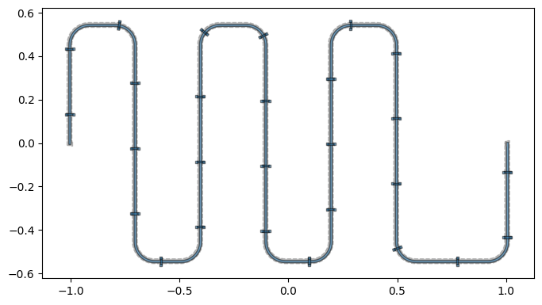
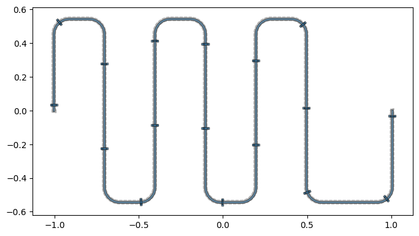
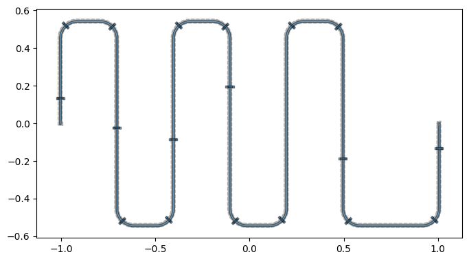
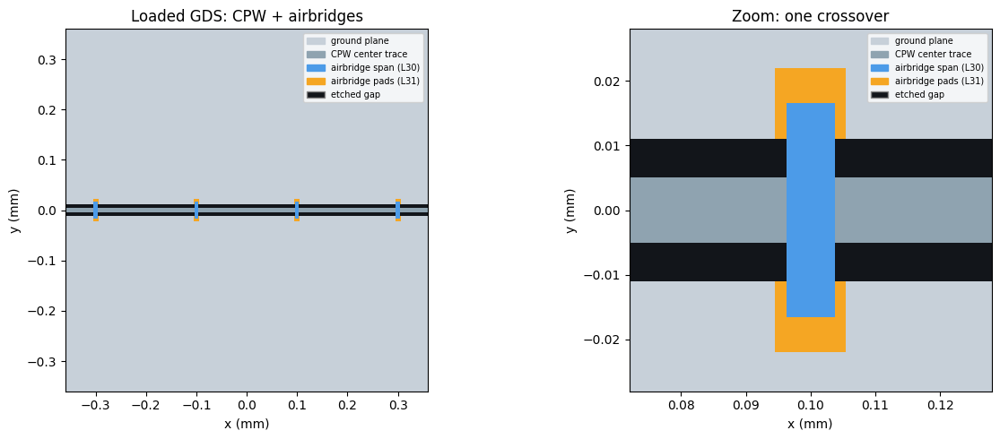
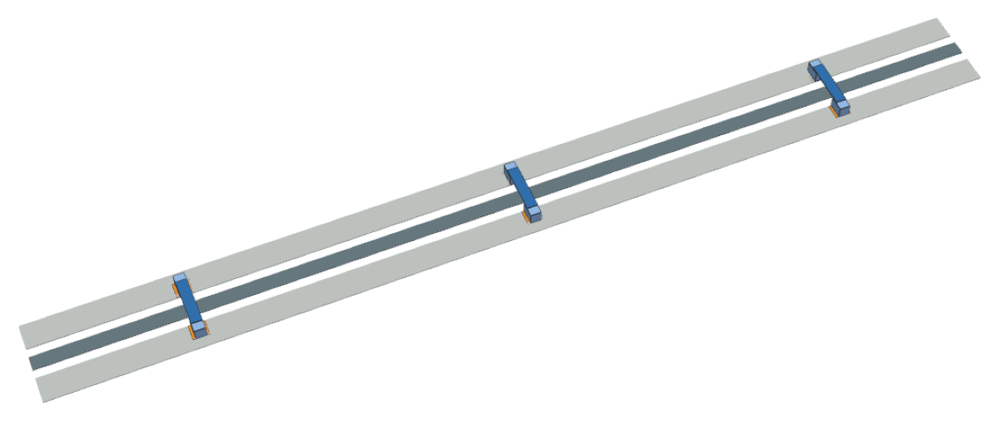

Note
This page was generated from tut/2-From-components-to-chip/2.15-Airbridges.ipynb.
Airbridges¶
Airbridges are ground-plane crossovers that hop over a CPW trace to tie the ground plane together and suppress unwanted slotline modes. In Quantum Metal an airbridge is a first-class QComponent: its geometry lives in the design, so it shows up in qm.view and is exported by every renderer — no GDS-only special case.
This tutorial covers the Airbridge component, automatic placement along a routed CPW with route_airbridges, and GDS export.
Setup¶
[1]:
import qiskit_metal as qm
from qiskit_metal import designs, Dict
from qiskit_metal.qlibrary.terminations.open_to_ground import OpenToGround
from qiskit_metal.qlibrary.tlines.straight_path import RouteStraight
from qiskit_metal.qlibrary.tlines.meandered import RouteMeander
from qiskit_metal.qlibrary.tlines.airbridge import Airbridge, route_airbridges
Preview¶
Here is where we are headed: a meander CPW with airbridges auto-placed along every straight and every bend. The rest of the tutorial builds up to this one piece at a time.
[2]:
design = designs.DesignPlanar()
design.overwrite_enabled = True
OpenToGround(design, "A", options=dict(pos_x="-1mm", orientation="0"))
OpenToGround(design, "B", options=dict(pos_x="1mm", orientation="180"))
cpw = RouteMeander(
design,
"cpw",
options=Dict(
pin_inputs=Dict(
start_pin=Dict(component="A", pin="open"),
end_pin=Dict(component="B", pin="open"),
),
total_length="9mm",
fillet="90um",
trace_width="10um",
trace_gap="6um",
meander=Dict(spacing="0.3mm"),
),
)
design.rebuild()
route_airbridges(design, cpw, pitch="0.3mm", min_spacing="30um", bridge_at_corners=True)
design.rebuild()
qm.view(design)
05:41AM 03s INFO [_start_renderers]: Renderer=hfss skipped: runtime dependency not installed (QAnsysRenderer requires pyEPR. Install with: pip install 'quantum-metal[ansys]').
05:41AM 03s INFO [_start_renderers]: Renderer=q3d skipped: runtime dependency not installed (QAnsysRenderer requires pyEPR. Install with: pip install 'quantum-metal[ansys]').
05:41AM 03s INFO [_start_renderers]: Renderer=aedt_q3d skipped: runtime dependency not installed (QPyaedt requires pyaedt (ansys.aedt.core). Install with: pip install 'quantum-metal[ansys]').
05:41AM 03s INFO [_start_renderers]: Renderer=aedt_hfss skipped: runtime dependency not installed (QPyaedt requires pyaedt (ansys.aedt.core). Install with: pip install 'quantum-metal[ansys]').
05:41AM 03s WARNING [check_lengths]: For path table, component=cpw, key=trace has short segments that could cause issues with fillet. Values in (1-1) (14-14) are index(es) in shapely geometry.
05:41AM 03s WARNING [check_lengths]: For path table, component=cpw, key=cut has short segments that could cause issues with fillet. Values in (1-1) (14-14) are index(es) in shapely geometry.
05:41AM 03s WARNING [check_lengths]: For path table, component=cpw, key=trace has short segments that could cause issues with fillet. Values in (1-1) (14-14) are index(es) in shapely geometry.
05:41AM 03s WARNING [check_lengths]: For path table, component=cpw, key=cut has short segments that could cause issues with fillet. Values in (1-1) (14-14) are index(es) in shapely geometry.
05:41AM 03s WARNING [check_lengths]: For path table, component=cpw, key=trace has short segments that could cause issues with fillet. Values in (1-1) (14-14) are index(es) in shapely geometry.
05:41AM 03s WARNING [check_lengths]: For path table, component=cpw, key=cut has short segments that could cause issues with fillet. Values in (1-1) (14-14) are index(es) in shapely geometry.
[2]:

A single airbridge¶
The Airbridge component draws two base-metal landing pads joined by an elevated bridge span. The bridge and the pads are emitted on separate layers (bridge_layer / pad_layer) so the two-step fabrication is representable.
[3]:
design = designs.DesignPlanar()
design.overwrite_enabled = True
Airbridge(design, "ab", options=dict(crossover_length="24um"))
design.rebuild()
qm.view(design)
05:41AM 04s INFO [_start_renderers]: Renderer=hfss skipped: runtime dependency not installed (QAnsysRenderer requires pyEPR. Install with: pip install 'quantum-metal[ansys]').
05:41AM 04s INFO [_start_renderers]: Renderer=q3d skipped: runtime dependency not installed (QAnsysRenderer requires pyEPR. Install with: pip install 'quantum-metal[ansys]').
05:41AM 04s INFO [_start_renderers]: Renderer=aedt_q3d skipped: runtime dependency not installed (QPyaedt requires pyaedt (ansys.aedt.core). Install with: pip install 'quantum-metal[ansys]').
05:41AM 04s INFO [_start_renderers]: Renderer=aedt_hfss skipped: runtime dependency not installed (QPyaedt requires pyaedt (ansys.aedt.core). Install with: pip install 'quantum-metal[ansys]').
[3]:

Key options (all parseable strings, e.g. '22um'):
crossover_length— the gap the bridge spans, foot-to-foot. Size it to aboutcpw_width + 2*cpw_gapof the CPW you are crossing.bridge_width— width of the elevated span.pad_width,pad_length— the base landing-pad footprint.bridge_layer,pad_layer— the fabrication layers.
Auto-placing airbridges along a CPW¶
route_airbridges(design, route, ...) adds Airbridge components along a routed CPW. Placement follows the route’s filleted centerline (the geometry that is actually rendered), so every bridge sits on the trace and crosses it perpendicular to the local direction — through bends as well as straights. Bridges are spaced by pitch and kept min_spacing clear of the end pins. By default each span is sized to the route’s trace_width + 2*trace_gap.
[4]:
design = designs.DesignPlanar()
design.overwrite_enabled = True
OpenToGround(design, "A", options=dict(pos_x="-1mm", orientation="0"))
OpenToGround(design, "B", options=dict(pos_x="1mm", orientation="180"))
cpw = RouteMeander(
design,
"cpw",
options=Dict(
pin_inputs=Dict(
start_pin=Dict(component="A", pin="open"),
end_pin=Dict(component="B", pin="open"),
),
total_length="8mm",
fillet="90um",
trace_width="10um",
trace_gap="6um",
meander=Dict(spacing="0.3mm"),
),
)
design.rebuild()
bridges = route_airbridges(design, cpw, pitch="0.3mm", min_spacing="30um")
design.rebuild()
print(f"placed {len(bridges)} airbridges")
qm.view(design)
05:41AM 04s INFO [_start_renderers]: Renderer=hfss skipped: runtime dependency not installed (QAnsysRenderer requires pyEPR. Install with: pip install 'quantum-metal[ansys]').
05:41AM 04s INFO [_start_renderers]: Renderer=q3d skipped: runtime dependency not installed (QAnsysRenderer requires pyEPR. Install with: pip install 'quantum-metal[ansys]').
05:41AM 04s INFO [_start_renderers]: Renderer=aedt_q3d skipped: runtime dependency not installed (QPyaedt requires pyaedt (ansys.aedt.core). Install with: pip install 'quantum-metal[ansys]').
05:41AM 04s INFO [_start_renderers]: Renderer=aedt_hfss skipped: runtime dependency not installed (QPyaedt requires pyaedt (ansys.aedt.core). Install with: pip install 'quantum-metal[ansys]').
05:41AM 04s WARNING [check_lengths]: For path table, component=cpw, key=trace has short segments that could cause issues with fillet. Values in (1-1) (14-14) are index(es) in shapely geometry.
05:41AM 04s WARNING [check_lengths]: For path table, component=cpw, key=cut has short segments that could cause issues with fillet. Values in (1-1) (14-14) are index(es) in shapely geometry.
05:41AM 04s WARNING [check_lengths]: For path table, component=cpw, key=trace has short segments that could cause issues with fillet. Values in (1-1) (14-14) are index(es) in shapely geometry.
05:41AM 04s WARNING [check_lengths]: For path table, component=cpw, key=cut has short segments that could cause issues with fillet. Values in (1-1) (14-14) are index(es) in shapely geometry.
05:41AM 04s WARNING [check_lengths]: For path table, component=cpw, key=trace has short segments that could cause issues with fillet. Values in (1-1) (14-14) are index(es) in shapely geometry.
05:41AM 04s WARNING [check_lengths]: For path table, component=cpw, key=cut has short segments that could cause issues with fillet. Values in (1-1) (14-14) are index(es) in shapely geometry.
placed 27 airbridges
[4]:

route_airbridges is idempotent: re-running it (e.g. re-executing this cell, or after re-routing) clears the airbridges it previously placed under the same name and re-places them. Tune the spacing, or forward extra options to every bridge via ab_options:
[5]:
bridges = route_airbridges(
design, cpw, pitch="0.5mm", min_spacing="30um", ab_options=dict(bridge_width="10um")
)
design.rebuild()
print(f"placed {len(bridges)} airbridges")
qm.view(design)
05:41AM 05s WARNING [check_lengths]: For path table, component=cpw, key=trace has short segments that could cause issues with fillet. Values in (1-1) (14-14) are index(es) in shapely geometry.
05:41AM 05s WARNING [check_lengths]: For path table, component=cpw, key=cut has short segments that could cause issues with fillet. Values in (1-1) (14-14) are index(es) in shapely geometry.
placed 17 airbridges
[5]:

Guaranteeing a bridge on every bend¶
Uniform spacing already covers bends wherever a pitch sample happens to land on a fillet arc, but with a coarse pitch a corner can fall between samples. Set bridge_at_corners=True to force one bridge centered on every rounded bend, in addition to the uniform-pitch bridges. A uniform bridge that would land within half a pitch of a corner bridge is dropped so the two do not bunch up.
[6]:
bridges = route_airbridges(
design, cpw, pitch="0.6mm", min_spacing="30um", bridge_at_corners=True
)
design.rebuild()
print(f"placed {len(bridges)} airbridges (one on every bend)")
qm.view(design)
05:41AM 05s WARNING [check_lengths]: For path table, component=cpw, key=trace has short segments that could cause issues with fillet. Values in (1-1) (14-14) are index(es) in shapely geometry.
05:41AM 05s WARNING [check_lengths]: For path table, component=cpw, key=cut has short segments that could cause issues with fillet. Values in (1-1) (14-14) are index(es) in shapely geometry.
placed 18 airbridges (one on every bend)
[6]:

Export to GDS¶
Because airbridges are real components, they export like anything else — the bridge and pad polygons land on their configured GDS layers. Here we export a straight CPW with airbridges:
[7]:
import tempfile
import os
gdesign = designs.DesignPlanar()
gdesign.overwrite_enabled = True
OpenToGround(gdesign, "A", options=dict(pos_x="-0.6mm", orientation="0"))
OpenToGround(gdesign, "B", options=dict(pos_x="0.6mm", orientation="180"))
gcpw = RouteStraight(
gdesign,
"cpw",
options=Dict(
pin_inputs=Dict(
start_pin=Dict(component="A", pin="open"),
end_pin=Dict(component="B", pin="open"),
),
trace_width="10um",
trace_gap="6um",
),
)
gdesign.rebuild()
route_airbridges(gdesign, gcpw, pitch="0.2mm", min_spacing="30um")
gdesign.rebuild()
path = os.path.join(tempfile.mkdtemp(), "airbridge_demo.gds")
gdesign.renderers.gds.export_to_gds(path)
print("wrote", path)
05:41AM 06s INFO [_start_renderers]: Renderer=hfss skipped: runtime dependency not installed (QAnsysRenderer requires pyEPR. Install with: pip install 'quantum-metal[ansys]').
05:41AM 06s INFO [_start_renderers]: Renderer=q3d skipped: runtime dependency not installed (QAnsysRenderer requires pyEPR. Install with: pip install 'quantum-metal[ansys]').
05:41AM 06s INFO [_start_renderers]: Renderer=aedt_q3d skipped: runtime dependency not installed (QPyaedt requires pyaedt (ansys.aedt.core). Install with: pip install 'quantum-metal[ansys]').
05:41AM 06s INFO [_start_renderers]: Renderer=aedt_hfss skipped: runtime dependency not installed (QPyaedt requires pyaedt (ansys.aedt.core). Install with: pip install 'quantum-metal[ansys]').
05:41AM 06s WARNING [import_junction_gds_file]: Not able to find file:"../resources/Fake_Junctions.GDS". Not used to replace junction. Checked directory:"/home/user/qiskit-metal/tutorials/2 From components to chip/resources".
05:41AM 06s WARNING [_check_either_cheese]: layer=30 is not in chip=main either in no_cheese_view_in_file or cheese_view_in_file from self.options.
05:41AM 06s WARNING [_check_either_cheese]: layer=31 is not in chip=main either in no_cheese_view_in_file or cheese_view_in_file from self.options.
wrote /tmp/tmp963uolnm/airbridge_demo.gds
Viewing the exported GDS¶
Let’s load the file back with gdstk and draw it. The airbridge span and pads are read straight from the GDS layers; the CPW ground/trace/gap is reconstructed from the design’s own clearance geometry, because a fabrication ground plane is a solid metal pour — a flat fill of the raw GDS would hide the thin CPW gap. Layers are colored with a legend.
[8]:
import gdstk
import matplotlib.pyplot as plt
from matplotlib.path import Path
from matplotlib.patches import PathPatch, Patch
from shapely.geometry import Polygon as SPoly, box
from shapely.ops import unary_union
def show_airbridge_gds(
design, gds_path, center_mm, span_mm, ax, bridge_layer=30, pad_layer=31
):
"""Load an exported GDS and draw it CPW-correctly, colored + legend.
Airbridge polygons come straight from the loaded GDS (``bridge_layer`` /
``pad_layer``); the CPW ground/trace/gap is reconstructed from the design's
``subtract`` QGeometry so the thin gap is visible against the solid ground.
"""
lib = gdstk.read_gds(gds_path)
top = next((c for c in lib.cells if c.name == "TOP"), lib.cells[0])
def gds_union(layer):
ps = [
SPoly(p.points).buffer(0)
for p in top.get_polygons(depth=None)
if p.layer == layer
]
return unary_union(ps) if ps else None
def buf(row):
g = row.geometry
if row.get("width", 0) and g.geom_type in ("LineString", "MultiLineString"):
return g.buffer(
design.parse_value(row.width) / 2.0, cap_style=2, join_style=2
)
return g
sx = design.parse_value(design.chips.main.size.size_x)
sy = design.parse_value(design.chips.main.size.size_y)
pt, po = design.qgeometry.tables["path"], design.qgeometry.tables["poly"]
gaps = unary_union(
[buf(r) for _, r in pt.iterrows() if r["subtract"]]
+ [buf(r) for _, r in po.iterrows() if r["subtract"]]
)
metal = box(-sx / 2, -sy / 2, sx / 2, sy / 2).difference(gaps)
trace = unary_union([buf(r) for _, r in pt.iterrows() if not r["subtract"]])
bridge, pads = gds_union(bridge_layer), gds_union(pad_layer)
def draw(geom, color):
if geom is None or geom.is_empty:
return
for g in [geom] if geom.geom_type == "Polygon" else geom.geoms:
v = list(g.exterior.coords)
c = [Path.MOVETO] + [Path.LINETO] * (len(v) - 2) + [Path.CLOSEPOLY]
for r in g.interiors:
rv = list(r.coords)
v += rv
c += [Path.MOVETO] + [Path.LINETO] * (len(rv) - 2) + [Path.CLOSEPOLY]
ax.add_patch(PathPatch(Path(v, c), facecolor=color, edgecolor="none"))
ground, tr, br, pa, sub = "#C7D0D9", "#8FA3B0", "#4C9BE8", "#F5A623", "#12151a"
ax.set_facecolor(sub)
for geom, col in [(metal, ground), (trace, tr), (pads, pa), (bridge, br)]:
draw(geom, col)
cx, cy = center_mm
ax.set_xlim(cx - span_mm, cx + span_mm)
ax.set_ylim(cy - span_mm, cy + span_mm)
ax.set_aspect("equal")
ax.set_xlabel("x (mm)")
ax.set_ylabel("y (mm)")
ax.legend(
handles=[
Patch(color=ground, label="ground plane"),
Patch(color=tr, label="CPW center trace"),
Patch(color=br, label=f"airbridge span (L{bridge_layer})"),
Patch(color=pa, label=f"airbridge pads (L{pad_layer})"),
Patch(facecolor=sub, edgecolor="#888", label="etched gap"),
],
fontsize=7,
loc="upper right",
)
return lib
# Center the zoom on one of the placed airbridges.
ab_x = sorted(
gdesign.parse_value(c.options["pos_x"])
for n, c in gdesign.components.items()
if n.startswith("cpw_ab_")
)
zoom_x = ab_x[len(ab_x) // 2]
fig, axes = plt.subplots(1, 2, figsize=(13, 5))
show_airbridge_gds(gdesign, path, center_mm=(0.0, 0.0), span_mm=0.36, ax=axes[0])
axes[0].set_title("Loaded GDS: CPW + airbridges")
show_airbridge_gds(gdesign, path, center_mm=(zoom_x, 0.0), span_mm=0.028, ax=axes[1])
axes[1].set_title("Zoom: one crossover")
fig.tight_layout()
fig
[8]:


Experimental: 3D airbridges¶
In a planar view and in GDS the crossover is flat (z = 0). For 3D FEM the span should be elevated above the base metal. Metal’s 3D renderers extrude each layer by the thickness / z_coord in the design’s layer stack, so lifting the bridge_layer is all it takes — the same rows feed gmsh, and (as the ecosystem matures) AWS Palace or Ansys.
To keep the elevated span connected to the base metal (so the design meshes as one conductor rather than a floating bar), the airbridges also grow support posts that rise from the pads to the span — enabled with enable_posts, and given a height by the matching layer-stack row:
from qiskit_metal.qlibrary.tlines.airbridge import (
route_airbridges,
apply_airbridge_layer_stack,
)
# design must be a DesignMultiPlanar (it carries a layer stack)
route_airbridges(design, cpw, pitch="0.3mm", enable_posts=True)
apply_airbridge_layer_stack(design, bridge_z_coord="3um", include_posts=True)
# then render 3D with the airbridge layers marked metal, e.g.
# QGmshRenderer(design, layer_types=dict(metal=[1, 30, 31, 32], dielectric=[3]))
The four views below are a true 3D render (PyVista / VTK — a real depth-sorted renderer, unlike matplotlib’s mplot3d) of the resulting shape: the elevated span on two posts, hopping over the CPW. Every in-plane dimension is the real component geometry; only z is exaggerated (x3) so the ~3 µm bridge is visible next to a ~40 µm span.
Validating on the open FEM path (Elmer)¶
Because the airbridge is now a connected 3D solid, it goes straight into the open-source FEM path — no Ansys required. QElmerRenderer meshes it (via gmsh) and runs a capacitance solve:
from qiskit_metal.renderers.renderer_elmer.elmer_renderer import QElmerRenderer
er = QElmerRenderer(design, layer_types=dict(metal=[1, 30, 31, 32], dielectric=[3]))
er.gmsh.options.mesh.min_size = "5um"
er.gmsh.options.mesh.max_size = "60um"
er.render_design(open_pins=[("A", "open"), ("B", "open")], skip_junctions=True)
er.add_solution_setup("capacitance")
er.run("capacitance") # needs the ElmerSolver binary
er.capacitance_matrix
The mesh and the Elmer .sif solver input are produced with only the pip-installable gmsh; the final run(...) needs the ElmerSolver binary, which you install from your OS package manager / the Elmer PPA (it is not a Python package, so pip install quantum-metal[fem] does not bring it in). tests/test_airbridge_elmer.py runs this end-to-end where a solver is present and skips otherwise.
⚠️ Experimental. The design meshes as a connected 3D solid and produces a valid Elmer solver input, but the numerical solve isn’t run in CI (no solver binary there), so the extracted values are not yet validated. Follow / help validate in issue #1144.
The 3D pictures below are rendered with PyVista (a VTK-based renderer), which — unlike matplotlib’s mplot3d — does true depth-sorting, so elevated and overlapping parts look right. It is an optional extra; install it into the running kernel with the cell below. PyVista also needs an OpenGL backend: a desktop session already has one; on a headless machine use osmesa/egl VTK wheels or a virtual framebuffer (xvfb). The tutorial ships the rendered images, so you can also just
read on without installing anything.
[ ]:
# Optional: install the 3D renderer used by the cells below (skip if you
# already have it). '%pip' installs into this notebook's kernel.
%pip install pyvista
[ ]:
# Real 3D render of the airbridge with PyVista (VTK) — a true depth-sorted
# renderer, unlike matplotlib's mplot3d (which has no real occlusion and makes
# overlapping/elevated parts look wrong). Every x/y extent is read from the real
# Airbridge QGeometry + CPW parameters; only z is exaggerated (x3) so the ~3 µm
# bridge is visible next to a ~40 µm span. Four views make the shape unambiguous.
#
# Needs ``pip install pyvista`` and an OpenGL backend (a display, EGL, OSMesa, or
# a headless Xvfb). The tutorial ships the rendered image; run the cell yourself
# (with the deps above) to spin it around live.
try:
import pyvista as pv
from qiskit_metal.designs.design_multiplanar import MultiPlanar
from qiskit_metal.qlibrary.tlines.airbridge import Airbridge
# One airbridge with support posts, at the origin. Native frame: the span
# crosses along x, so the CPW it hops runs along y.
_d = MultiPlanar()
_d.overwrite_enabled = True
_ab = Airbridge(_d, "ab", options=dict(enable_posts="True"))
_d.rebuild()
_p = _ab.parse_options()
PAD_T, POST_TOP, SPAN_T = 0.2, 3.0, 0.3
ZEX = 3.0 # z exaggeration (true bridge ~3 µm over a ~40 µm span)
_w = _d.parse_value("10um") * 1e3
_g = _d.parse_value("6um") * 1e3
_Y = (2 * _p.pad_length + _p.crossover_length) * 1e3
_GND = _w / 2 + _g + 16
def _box(x0, x1, y0, y1, z0, z1):
return pv.Box(bounds=(x0, x1, y0, y1, z0 * ZEX, z1 * ZEX))
_meshes = [
(_box(-_w / 2, _w / 2, -_Y / 2, _Y / 2, 0, PAD_T), "#6E8494"), # CPW trace
(_box(_w / 2 + _g, _GND, -_Y / 2, _Y / 2, 0, PAD_T), "#CBD5DD"), # ground far
(
_box(-_GND, -(_w / 2 + _g), -_Y / 2, _Y / 2, 0, PAD_T),
"#CBD5DD",
), # ground near
]
_cols = {
31: (0, PAD_T, "#E8912B"), # landing pads
32: (PAD_T, POST_TOP, "#8FB8EC"), # support posts
30: (POST_TOP, POST_TOP + SPAN_T, "#2F6FB2"),
} # elevated span
_ordr = {31: 0, 32: 1, 30: 2}
for _, _row in sorted(
_ab.qgeometry_table("poly").iterrows(), key=lambda r: _ordr[int(r[1]["layer"])]
):
_z0, _z1, _c = _cols[int(_row["layer"])]
_x0, _y0, _x1, _y1 = (v * 1e3 for v in _row["geometry"].bounds)
_meshes.append((_box(_x0, _x1, _y0, _y1, _z0, _z1), _c))
pl = pv.Plotter(
off_screen=True, shape=(2, 2), window_size=(1400, 1050), border=False
)
def _populate():
for _m, _c in _meshes:
pl.add_mesh(
_m,
color=_c,
show_edges=True,
edge_color="#333333",
line_width=1,
ambient=0.35,
diffuse=0.7,
specular=0.15,
)
pl.set_background("white")
_titles = ["top", "front — along the CPW", "side — across the CPW", "isometric"]
_setters = ["view_xy", "view_xz", "view_yz", "view_isometric"]
for _i, (_r, _cc) in enumerate([(0, 0), (0, 1), (1, 0), (1, 1)]):
pl.subplot(_r, _cc)
_populate()
getattr(pl, _setters[_i])()
if _setters[_i] == "view_isometric":
pl.camera.azimuth = 20
pl.camera.elevation = 12
pl.add_legend(
labels=[
["landing pads (L31)", "#E8912B"],
["support posts (L32)", "#8FB8EC"],
["elevated span (L30)", "#2F6FB2"],
["CPW centre trace", "#6E8494"],
["ground plane", "#CBD5DD"],
],
bcolor="white",
size=(0.32, 0.26),
loc="lower right",
face="r",
)
pl.add_text(_titles[_i], position="upper_left", font_size=11, color="#222222")
pl.camera.zoom(1.6 if _setters[_i] == "view_yz" else 1.3)
pl.subplot(1, 0)
pl.add_text("z exaggerated x3", position="lower_left", font_size=9, color="#888888")
_img = pl.screenshot(return_img=True)
pl.close()
fig, _axp = plt.subplots(figsize=(13, 9.7))
_axp.imshow(_img)
_axp.axis("off")
fig
except Exception as _exc: # pragma: no cover - depends on optional pyvista + GL
print("PyVista 3D render unavailable:", _exc)
print(
"Install it with `pip install pyvista` and ensure an OpenGL/OSMesa/Xvfb backend,"
)
print("then re-run this cell to render the airbridge in true 3D.")

A whole row, in 3D¶
And the payoff: route_airbridges drops a bridge every pitch along the trace, so a real device is crossed by a row of these elevated spans tying the ground plane together. Here is that CPW rendered in true 3D:
[ ]:
# The whole story in 3D: a CPW crossed by a row of airbridges, each an elevated
# span on two support posts tying the ground planes together. Rendered with
# PyVista (VTK) from the real auto-placed geometry (route_airbridges +
# apply_airbridge_layer_stack); z is exaggerated x3 for visibility. Needs
# `pip install pyvista` and an OpenGL backend — the tutorial ships the image.
try:
import pyvista as pv
from qiskit_metal import Dict
from qiskit_metal.designs.design_multiplanar import MultiPlanar
from qiskit_metal.qlibrary.terminations.open_to_ground import OpenToGround
from qiskit_metal.qlibrary.tlines.straight_path import RouteStraight
from qiskit_metal.qlibrary.tlines.airbridge import (
Airbridge,
route_airbridges,
apply_airbridge_layer_stack,
)
_hd = MultiPlanar()
_hd.overwrite_enabled = True
OpenToGround(_hd, "A", options=dict(pos_x="-0.32mm", orientation="0"))
OpenToGround(_hd, "B", options=dict(pos_x="0.32mm", orientation="180"))
_hcpw = RouteStraight(
_hd,
"cpw",
options=Dict(
pin_inputs=Dict(
start_pin=Dict(component="A", pin="open"),
end_pin=Dict(component="B", pin="open"),
),
trace_width="10um",
trace_gap="6um",
),
)
_hd.rebuild()
route_airbridges(_hd, _hcpw, pitch="0.22mm", min_spacing="30um", enable_posts=True)
_hd.rebuild()
apply_airbridge_layer_stack(_hd, bridge_z_coord="3um", include_posts=True)
PAD_T, POST_TOP, SPAN_T, ZEX = 0.2, 3.0, 0.3, 3.0
_hcol = {31: "#E8912B", 32: "#8FB8EC", 30: "#2F6FB2"}
_hzb = {31: (0, PAD_T), 32: (PAD_T, POST_TOP), 30: (POST_TOP, POST_TOP + SPAN_T)}
_hord = {31: 0, 32: 1, 30: 2}
def _hbox(x0, x1, y0, y1, z0, z1):
return pv.Box(bounds=(x0, x1, y0, y1, z0 * ZEX, z1 * ZEX))
hpl = pv.Plotter(off_screen=True, window_size=(1400, 620), border=False)
hpl.set_background("white")
_L, _w, _g = 640, 10.0, 6.0
hpl.add_mesh(_hbox(-_L / 2, _L / 2, -_w / 2, _w / 2, 0, PAD_T), color="#6E8494")
for _lo, _hi in [
(_w / 2 + _g, _w / 2 + _g + 18),
(-(_w / 2 + _g + 18), -(_w / 2 + _g)),
]:
hpl.add_mesh(_hbox(-_L / 2, _L / 2, _lo, _hi, 0, PAD_T), color="#CBD5DD")
_hrows = []
for _cn, _c in _hd.components.items():
if isinstance(_c, Airbridge):
for _, _r in _c.qgeometry_table("poly").iterrows():
_hrows.append((int(_r["layer"]), _r["geometry"].bounds))
for _layer, _b in sorted(_hrows, key=lambda r: _hord[r[0]]):
_z0, _z1 = _hzb[_layer]
_x0, _y0, _x1, _y1 = (v * 1e3 for v in _b)
hpl.add_mesh(
_hbox(_x0, _x1, _y0, _y1, _z0, _z1),
color=_hcol[_layer],
show_edges=True,
edge_color="#333333",
line_width=1,
ambient=0.35,
diffuse=0.72,
specular=0.15,
)
hpl.enable_depth_peeling()
hpl.view_isometric()
hpl.camera.azimuth = 22
hpl.camera.elevation = 18
hpl.camera.zoom(1.7)
_himg = hpl.screenshot(return_img=True)
hpl.close()
# crop the surrounding white so the strip fills the frame
_mask = (_himg < 250).any(axis=2)
_ys, _xs = _mask.any(axis=1), _mask.any(axis=0)
_y0, _y1 = _ys.argmax(), len(_ys) - _ys[::-1].argmax()
_x0, _x1 = _xs.argmax(), len(_xs) - _xs[::-1].argmax()
_himg = _himg[max(_y0 - 8, 0) : _y1 + 8, max(_x0 - 8, 0) : _x1 + 8]
fig, _hax = plt.subplots(figsize=(12, 12 * _himg.shape[0] / _himg.shape[1]))
_hax.imshow(_himg)
_hax.axis("off")
fig
except Exception as _exc: # pragma: no cover - optional pyvista + GL
print("PyVista 3D render unavailable:", _exc)
print(
"Install `pip install pyvista` with an OpenGL/OSMesa/Xvfb backend to render it."
)

That’s the airbridge workflow: place them (individually or automatically), see them in qm.view, and export. Design-of-record and roadmap (including the experimental 3D/Ansys span) are tracked in issue #1138.
For more information, review the Introduction to Quantum Computing and Quantum Hardware lectures below
|
Lecture Video | Lecture Notes | Lab |
|
Lecture Video | Lecture Notes | Lab |
|
Lecture Video | Lecture Notes | Lab |
|
Lecture Video | Lecture Notes | Lab |
|
Lecture Video | Lecture Notes | Lab |
|
Lecture Video | Lecture Notes | Lab |